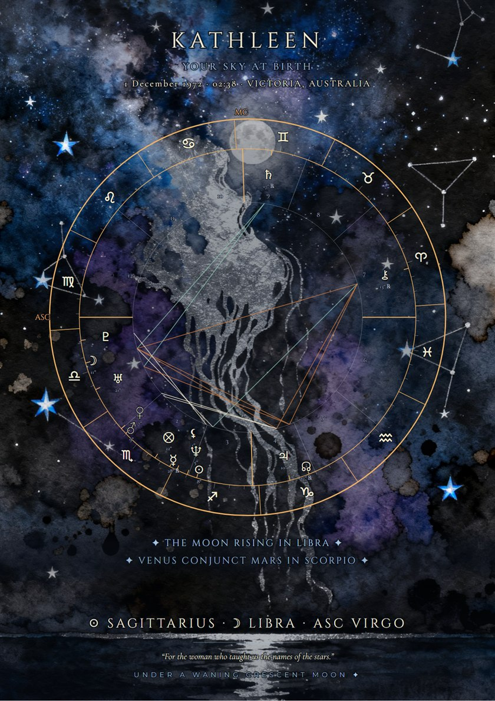
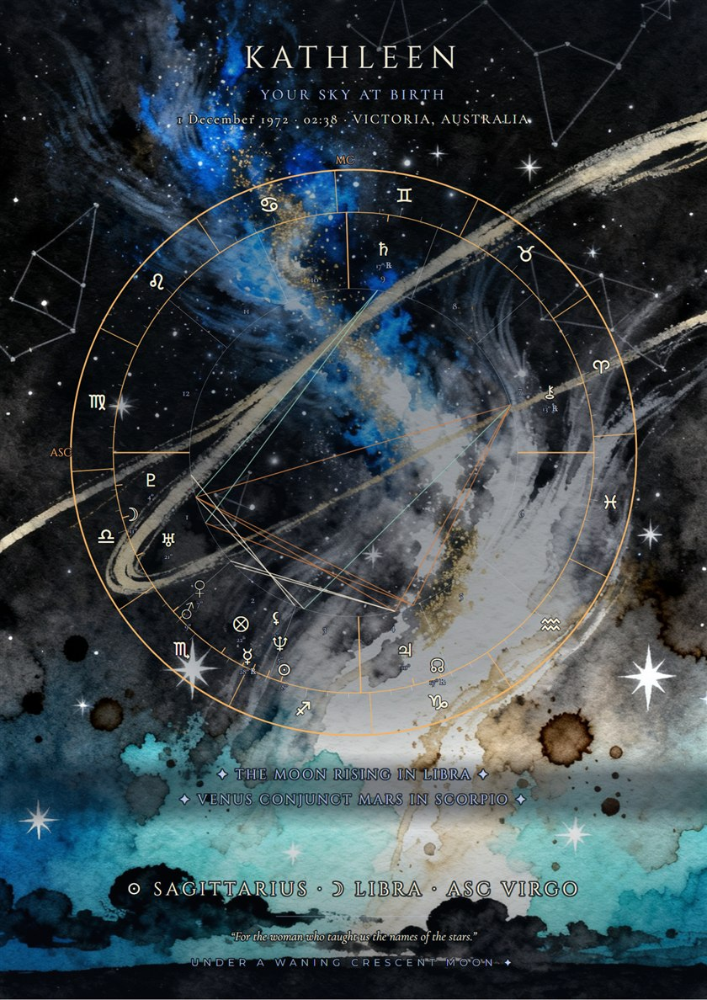
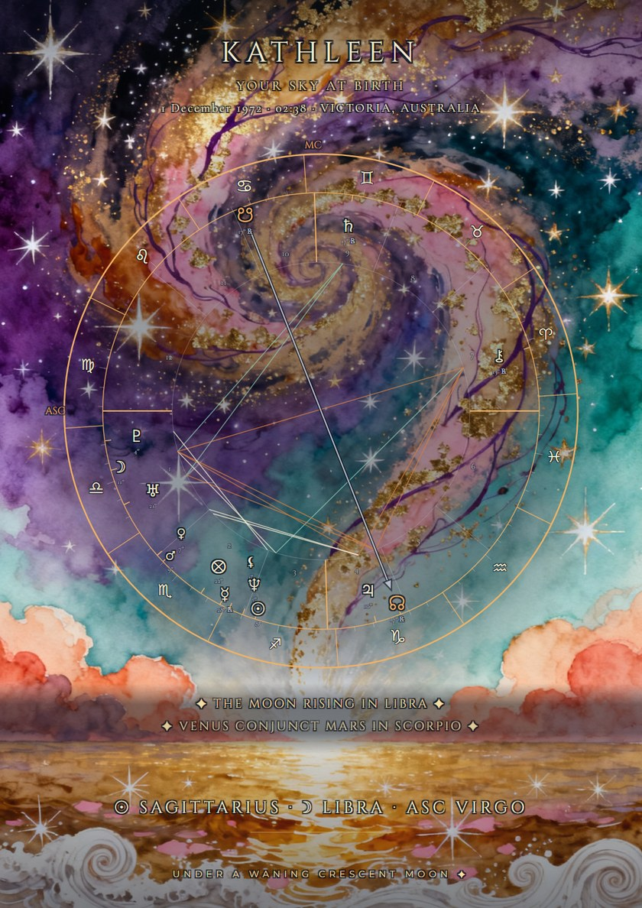

Your birth chart,
painted into a night sky.
The Painted Skies are fine-art star maps of the exact sky you were born under: your natal chart, every planet, house and aspect, set in one of three painted night skies. A print-ready file to frame, for you or as a gift. $33 AUD for the map, or $44 AUD as The Written Sky, with six plates where your chart is read back to you.
Three skies, one chart
The same wheel lives in each; choose the sky that calls.



Tap a sky to see it full size. Shown with permission.
What is on the map
Not a map of the constellations: a map of your chart, the sky as it stood at the minute and place you were born.
- Your nameThe first name you choose, with "Your Sky at Birth" and the date, time and place beneath it.
- The wheelYour natal chart in full: every planet in its sign and house, and the major aspects drawn as lines between them.
- The Dragon's LineYour lunar nodes, marked in silver across the wheel: the South Node, what is already practised and familiar to you, and the North Node, the direction of growth.
- Two lines of geometryTwo true features of your chart inscribed beneath the wheel, such as "Venus conjunct Mars in Scorpio", with your Sun, Moon and rising signs.
- Your birth moonThe phase the Moon was in when you were born, written at the map's foot.
- A dedicationOptional: a line in your own words, printed in italics at the foot. Perfect for a gift.
The map, or the map and its reading
The same map, and beneath it six plates on the same indigo night, where your chart stops being a diagram and starts speaking:
- Your Sky at Birth: your Big Three, the shape of your chart and its balance of elements and modes.
- Every placement, to the arcminute, and your seven loudest aspects.
- The reading itself: your Sun, Moon and rising sign each given a full voice, then read together as one signature.
- The seven aspects, each grown into its own passage.
- The Dragon's Line, your nodal axis read as one line through you.
- The Whole Sky, what all of it says together, closed with a line composed for your chart alone.
Two of the six Written Sky plates. Tap to see them full size.
For you, or as a gift
A Painted Sky is the sky on the day someone arrived, which makes it one of the most personal gifts there is: for a birthday, a new baby, a partner, a parent, or a friend who lives by the stars. Order with their birth details and their first name, add a dedication if you like, and the finished files come to your email to print and give.
Maps are composed one chart at a time, in good time, and delivered by email; nothing arrives by post. The map comes as two files: a PDF sized for A4 or US Letter, for printing at home or at a print shop, and a large-format poster file that prints beautifully up to A2. The Written Sky adds its six plates as a third file. Printing notes come with them.
Questions
Do I need an exact birth time?
For the full wheel, yes. The houses and the rising sign depend on the minute and place of birth; the planets' signs depend mostly on the date. The time on a birth certificate or hospital record is best.
If you don't know it, tick "I don't know my birth time" on the form, and we will contact you about what is still possible before anything is made. More on birth times.
Is this a map of the constellations?
No. Many "star map" gifts show the constellations overhead on a date. A Painted Sky is your birth chart: the planets as astrology reads them, in their signs and houses, with the angles between them. It is the same chart the free calculator casts, painted into a night sky.
Can you post me a printed copy?
Not at the moment. Everything is delivered digitally, as print-ready files you can print at home or at any print shop. The poster file is made for large prints, up to A2.
What is the Dragon's Line?
Your lunar nodes: the two points where the Moon's path crossed the Sun's at your birth, always exactly opposite each other. The South Node is read as what you already know by heart, practised and familiar; the North Node as the direction of growth and the unfamiliar. The map marks the line between them in silver, and The Written Sky reads it in full.
Which zodiac and house system do you use?
The tropical zodiac, Placidus houses and the true lunar node: the same as the free birth chart calculator, so you can check the chart there first. If another app shows a planet in a different house, here is why.
What happens to the birth details?
They travel encrypted to our order system, are used for your map and nothing else, and are never shared. Payment is handled securely by Square or PayPal, in Australian dollars.
The sky on the day you arrived,
painted to keep.